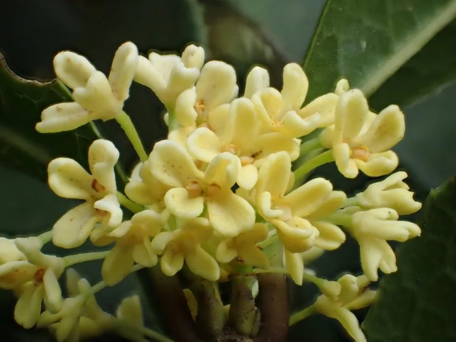

乔木 · 植物界
桂花 Osmanthus fragrans

秋季开花、香气浓郁的常绿小乔木，是江南庭院与中秋文化中极具代表性的树种，花可制糖桂花、桂花茶与糕点。
- 分类
- 门被子植物门纲木兰纲目唇形目科木犀科属木犀属
- 栖息环境
- 海拔 1500 米以下的丘陵、平原与庭院，喜温暖湿润和充足光照
- 地理分布
- 原产中国西南部，长江流域以南广泛栽培，日本、印度亦有引种
- 保护级别
- 暂无评估；中国未列入国家重点保护野生植物名录
物种志
桂花为常绿小乔木或灌木，高可达 12 m，树冠圆球形，树皮灰褐色；叶片对生，椭圆形至椭圆状披针形，革质，边缘上半部具细锯齿，叶腋内常有小芽簇生。秋季开花，花小、簇生于叶腋，花冠 4 裂，黄色、橙黄或近白色，香气浓郁，可飘散数百米；核果椭圆形，成熟时紫黑色，但自然结果较为稀少。
桂花原产中国西南部，现长江流域以南各地广泛栽培，喜温暖湿润、喜光也耐半阴，适宜深厚肥沃、排水良好的微酸性土壤。按花色与花期可分为金桂、银桂、丹桂和四季桂四大品种群，其中丹桂色泽橙红、四季桂可多次开花。桂花是传统名花，与“贵”谐音而寓意吉祥，中秋赏桂、饮桂花酒、食桂花糕的习俗流传至今；花可提取香精，用于制茶、酿酒与糕点。
形态与习性
- 株高可达 12 m，冠幅可达 8 m
- 花期9–10 月，四季桂可多次开花
- 果期翌年 4–5 月，结果稀少
- 光照喜光，也耐半阴
- 水分喜湿润，怕积水
- 土壤微酸性、深厚肥沃的壤土
- 主要用途庭院香化、桂花茶与糕点、提取香精
趣味知识
- 桂花的香气主要来自芳樟醇等挥发性成分，一朵小花就能让整条街巷飘香。
- 桂花按花色分为金桂、银桂、丹桂、四季桂四大品种群，其中丹桂最艳、金桂最香。
- 中国科举时代把高中进士称为“蟾宫折桂”，桂花因此成为功名与吉祥的象征。
- 桂花结果稀少，果实俗称“桂子”，成熟时紫黑色，形如小橄榄。